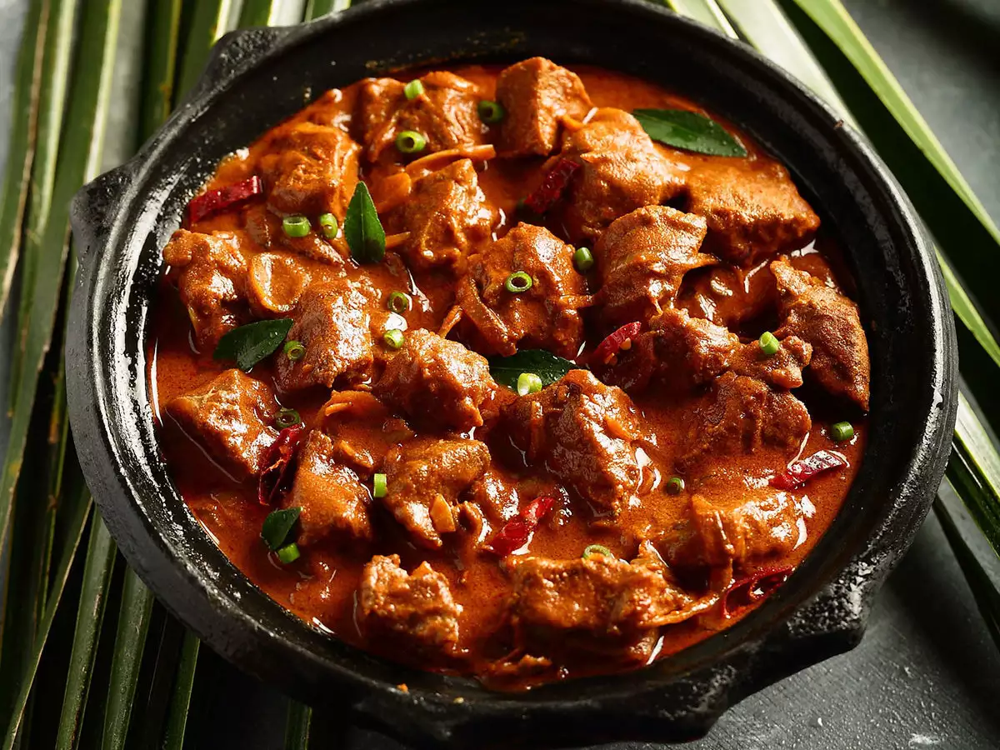

Rogan Josh
Deeply aromatic, tender, and richly spiced — Rogan Josh is a classic Kashmiri dish that brings warmth and sophistication to any meal, perfect for a cozy night or a special dinner.
Preparation:
20-30 minutes active prep
Marinate Time:
Optional: 30 minutes (for deeper flavor)
Cook:
1.5 to 2 hours (slow simmering)
Total:
About 2-2.5 hours
Ingredients:
- 2 pounds (900g) lamb (shoulder or leg), cut into chunks
- 1 cup (240g) plain yogurt
- 4 tablespoons vegetable oil or ghee
- 1 large onion, finely sliced
- 4 cloves garlic, minced
- 1 tablespoon grated fresh ginger
- 2 teaspoons ground coriander
- 2 teaspoons ground cumin
- 1 1/2 teaspoons Kashmiri chili powder (or mild paprika + cayenne blend)
- 1 teaspoon ground turmeric
- 1 teaspoon garam masala
- 1/2 teaspoon ground cinnamon
- 4 green cardamom pods, crushed
- 2 whole cloves
- 1 bay leaf
- Salt, to taste
- 1 1/2 cups (360ml) water or lamb stock
- Fresh cilantro, for garnish (optional)
Instructions:
- In a large bowl, toss the lamb pieces with the yogurt, salt, and half of the coriander, cumin, and turmeric. Marinate for at least 30 minutes, or up to overnight in the fridge.
- Heat the oil or ghee in a heavy-bottomed pot over medium heat. Add the bay leaf, crushed cardamom pods, cloves, and cinnamon. Fry for about 30 seconds until fragrant.
- Add the sliced onions and cook until deeply golden and caramelized, about 10-15 minutes.
- Stir in the garlic and ginger and cook for another minute.
- Add the marinated lamb pieces and cook until they are browned on all sides.
- Sprinkle in the remaining coriander, cumin, chili powder, and turmeric. Stir well to coat the lamb in the spices.
- Pour in the water or stock, bring to a simmer, then reduce the heat to low. Cover and cook gently for 1.5 to 2 hours, stirring occasionally, until the lamb is tender and the sauce is rich and thick.
- Stir in the garam masala just before serving. Adjust seasoning with salt if needed.
- Garnish with fresh cilantro if desired. Serve hot with basmati rice or naan.